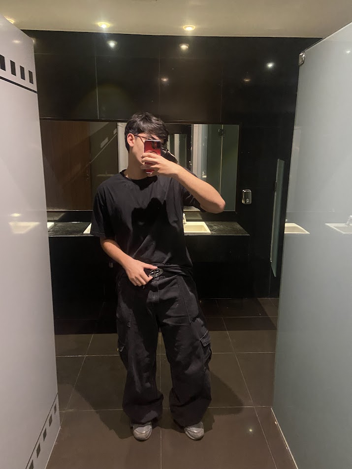

ou melhor: katiiauu

Oi! Eu sou Ryan Antonio Dos Reis De Oliveira, um desenvolvedor apaixonado e entusiasta de dados. Adoro criar coisas legais e explorar novas tecnologias.
Confira meus projetos e entre em contato!
LinkedIn: ryanreisoliveira
Instagram: rreisnt
Email: ryanreisoliveira08@gmail.com
GitHub: rreis-nt